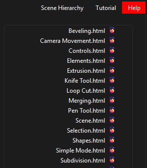
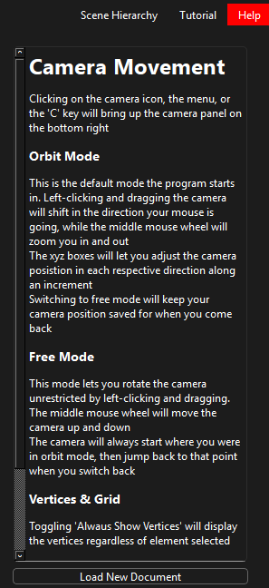
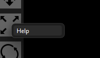
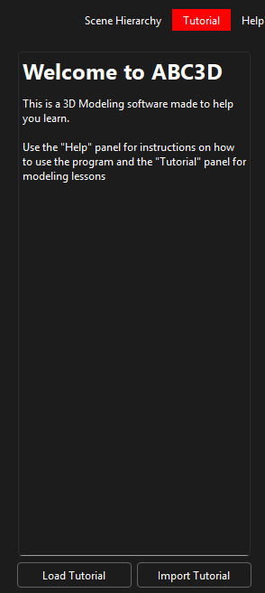

Help
Introduction
ABC3D was developed with beginners in mind. Hence, we put extra effort into making sure ample help documentation is shipped with the software. In addition to official help documentation, ABC3D also allows for importing custom HTML tutorial documents that can be imported directly into the tutorial panel.
Help Panel
In the top right of ABC3D is the help, tutorial, and scene hierarchy panel. In the help panel you will be presented with an index of all available help documents.

You may enter any document by clicking on it, and return to the index by clicking load new document.

Lastly, you may right click any tool and select help to open up its respective help document in the help panel.

Tutorial Panel
The tutorial panel will display an index of tutorials, not unlike the help panel. From there you may open a tutorial document pre-included with ABC3D, or import a custom HTML tutorial.
